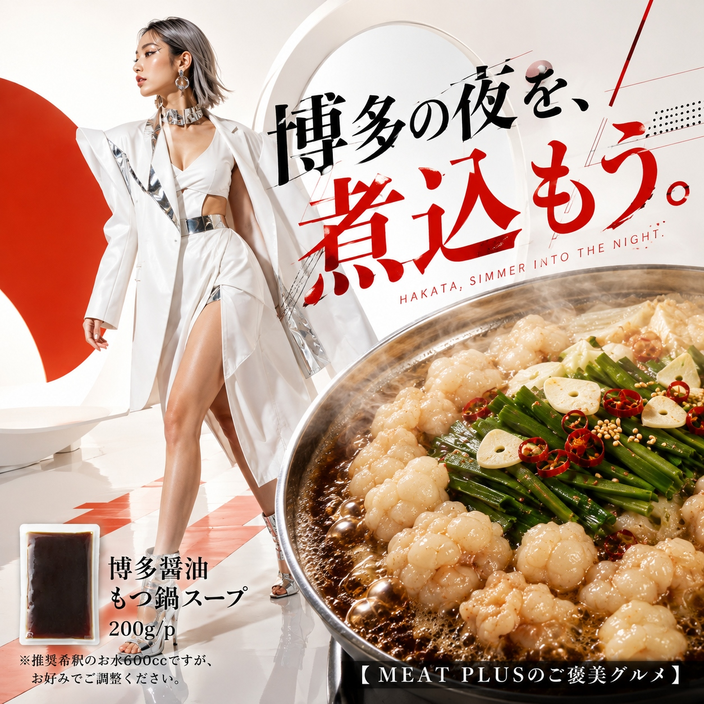
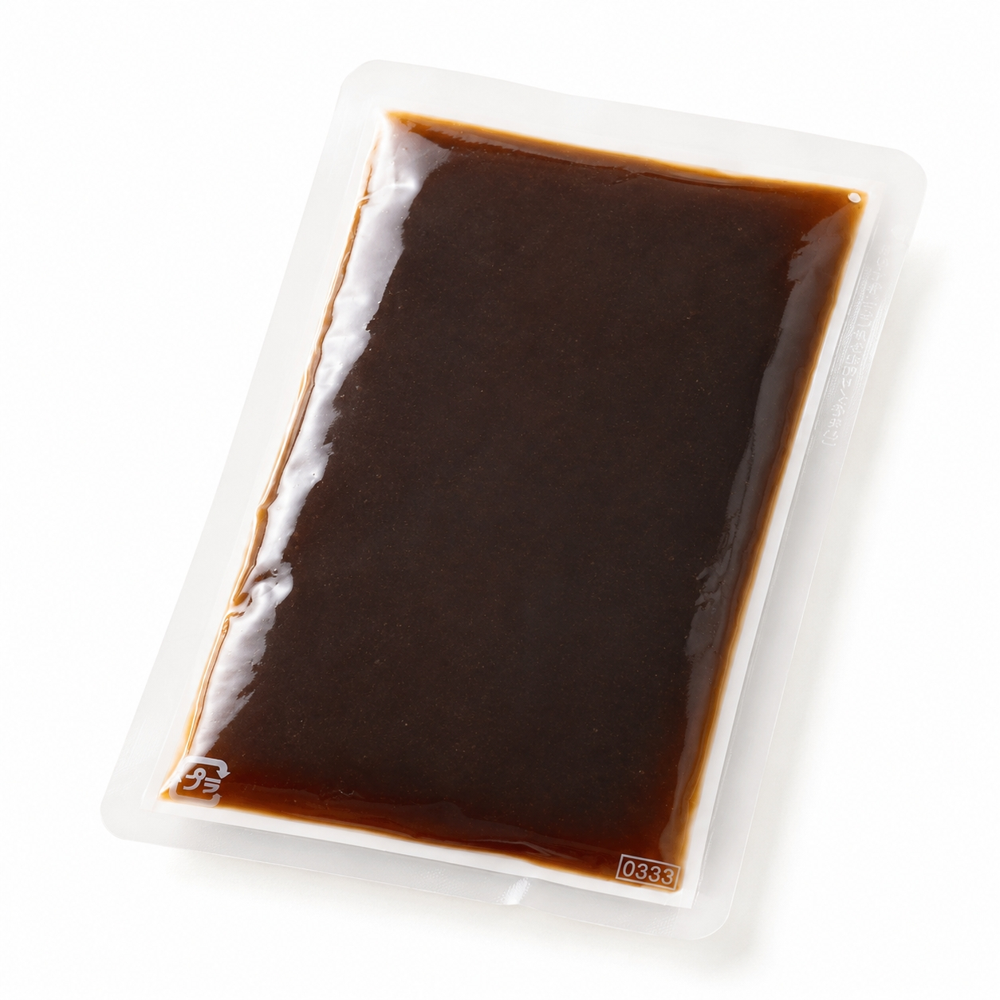

SCENE 01

i 惣菜・加工品
【おうちで簡単、本場博多の味。〆まで美味しい絶品もつ鍋。】
家族や仲間と囲む温かい食卓、そんな特別なひとときに、本場博多の味はいかがでしょうか。この「博多醤油もつ鍋スープ」は、ご家庭で手軽に本格的なもつ鍋を楽しめる濃縮タイプのスープです。昆布とかつおの豊かな出汁をベースにした、深みのある醤油味が特徴。プリプリのもつや新鮮な野菜の旨味を最大限に引き立て、箸が止まらなくなる美味しさです。使い方はとても簡単。本品1袋（200g）にお好みに合わせて水600ccを目安に加えるだけ。あとはお好きな具材を入れて煮込むだけで、専門店の味が完成します。常温で保存できるので、ストックしておけばいつでも手軽にもつ鍋パーティーが楽しめます。鍋の〆には、旨味が凝縮されたスープでちゃんぽん麺や雑炊を。最後の一滴まで博多の味を心ゆくまでご堪能ください。今夜はちょっと特別なごちそうを。このスープが、あなたの食卓を笑顔で満たすお手伝いをします。
公式サイトへ移動します。価格・在庫・配送条件は移動先で最終確認してください。

PRODUCT INFORMATION
還元水あめ、しょうゆ、発酵調味料、食塩、こんぶエキス、こんぶ加工品、醸造酢、かつおエキス／調味料（アミノ酸等）、カラメル色素、酒精、増粘剤（キサンタン）、（一部に小麦・大豆を含む）
FAQ
1袋200gで、お水600ccで希釈した場合、約2〜3人前が目安です。お野菜など入れる具材の量に合わせてご調整ください。
未開封の状態では直射日光を避け、常温で保存してください。開封後はお早めにお召し上がりください。長期間保管される場合は、冷凍での保存も可能です。
MEAT PLUS OFFICIAL SHOP
仕入れ・加工・梱包・発送まで自社で行うMEAT PLUSの公式オンラインショップでご注文いただけます。
公式オンラインショップで購入する